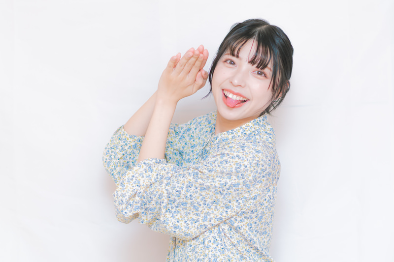

🎉 正解おめでとう 🎉
あなたは選ばれし者です。以下の規約に同意してください。
【正解者限定規約 第1条】
本ページに到達したユーザー（以下「賢者」という）は、本サイトのシュールさを永遠に愛さなければならない。
【第2条】
賢者は、昨日食べたラーメンが伸びていたことに対し、深い同情の意を示す義務を負う。
【第3条】
盛岡冷麺とグミを「ゴム」と呼称することを許可するが、公共の場では慎むこと。
【第4条】
この規約を最後まで読み終えるまで、賢者はこのページを閉じることは推奨されない。
【第5条】
皇室典範の定めるところにより摂政を置くときは、摂政は、天皇の名でその国事に関する行為を行ふ。この場合には、前条第一項の規定を準用する。
【第6条】
以上の条文を理解した笑顔として、右上の写真のお姉さんの表情を模倣すること。
※規約をすべて読み終えるまで「同意」ボタンはロックされています。